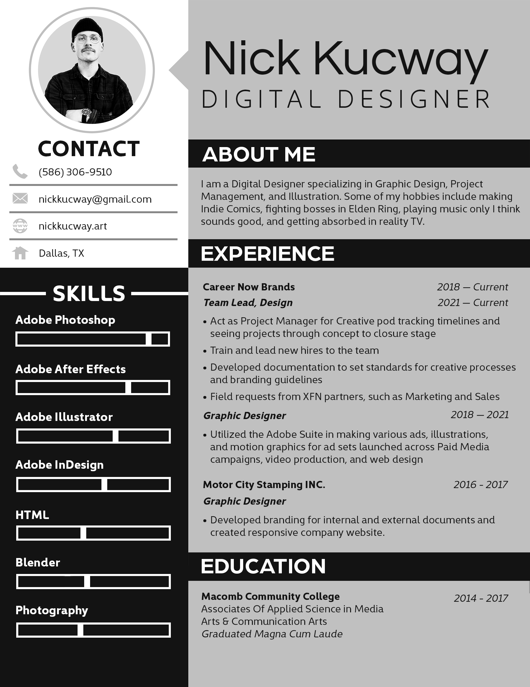

I am a design focused Front End Developer with a passion for creative solutions. My previous role as a Graphic Design Team Lead has given me the ability to communicate ideas effectively, as well as work well with others on a team towards a common deliverable. I want to bring my passion for visual design and problem solving to the front-end space.